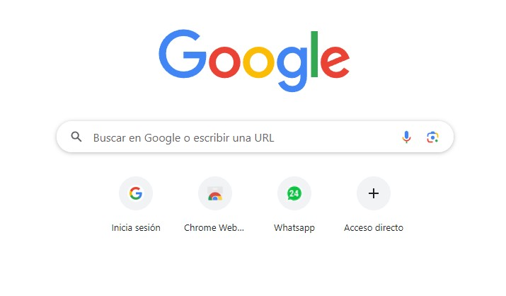
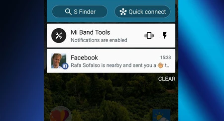
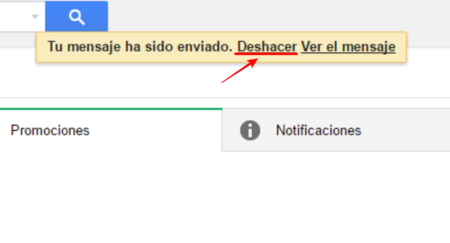

- Simplicidad
Descripción: La simplicidad en el diseño web implica crear interfaces que sean intuitivas y fáciles de entender. Los elementos innecesarios deben eliminarse para no sobrecargar al usuario con información superflua. La navegación debe ser clara y directa, con el contenido esencial al alcance de un par de clics.
Ejemplo: Google utiliza una página de inicio minimalista con un campo de búsqueda centralizado que permite a los usuarios realizar búsquedas rápidamente, sin distracciones.

- Consistencia
Descripción: La consistencia asegura que todos los elementos del sitio web, desde los colores y las tipografías hasta los patrones de navegación y los comportamientos interactivos, sean uniformes en todas las páginas. Esto ayuda a los usuarios a familiarizarse rápidamente con el sitio y a navegarlo con mayor facilidad.
Ejemplo: Amazon mantiene una estructura de menú y estilo coherentes en todas sus páginas, facilitando la navegación y la comprensión del usuario.
- Feedback
Descripción: El feedback es la respuesta inmediata que el sistema proporciona al usuario después de realizar una acción. Este principio es crucial para que los usuarios comprendan el resultado de sus acciones y si estas han sido exitosas o no. Puede incluir mensajes, cambios visuales, sonidos o animaciones.
Ejemplo: Facebook notifica instantáneamente cuando se realiza una acción, como "me gusta" o comentarios, mostrando mensajes o indicadores visuales que confirman la acción.

- Accesibilidad
Descripción: La accesibilidad se refiere a la capacidad del sitio web para ser utilizado por personas con diversas capacidades, incluyendo aquellas con discapacidades. Esto incluye el uso de etiquetas alt para imágenes, la compatibilidad con lectores de pantalla, y opciones para cambiar el tamaño del texto y el contraste de los colores.
Ejemplo: El sitio web de la BBC ofrece opciones para cambiar el tamaño del texto y la configuración de contraste para personas con problemas de visión, asegurando que el contenido sea accesible para una audiencia más amplia.
- Control del Usuario
Descripción: Este principio se basa en proporcionar a los usuarios un sentido de control sobre sus acciones dentro del sitio web. Los usuarios deben poder deshacer acciones, salir de procesos si lo desean y tener un manejo claro sobre su experiencia de navegación.
Ejemplo: Gmail permite a los usuarios deshacer el envío de un correo electrónico inmediatamente después de enviarlo, proporcionando un sentido de control y seguridad al permitir corregir errores rápidamente.
